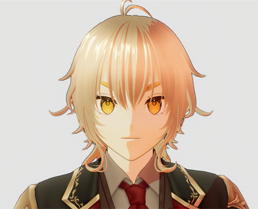
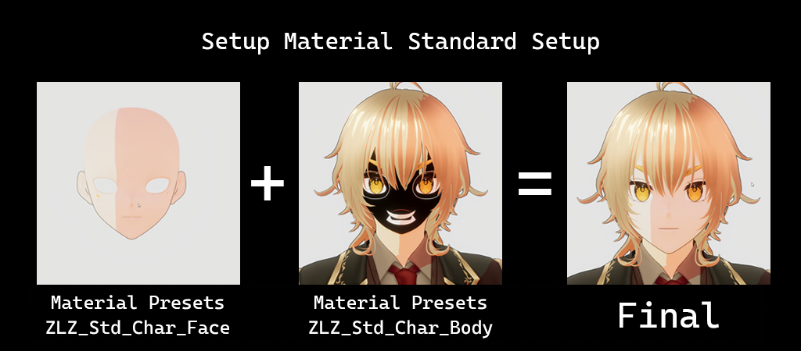
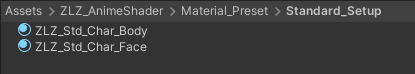

Standard Setup

Suitable for general use and for characters that do not require a transparent hair system.
- Fully supports all core shader features
- Simple and fast to set up, making it suitable as a starting configuration
- Does not require transparent hair rendering that allows the face, eyes, and eyebrows to be visible through front hair (Hair Transparent)
- Does not require the hair shadow system (Hair Shadow)
This is the base setup that the shader is designed to work with for all character models
and is the recommended starting point for users of all experience levels.
last_modified_at: %Y->-
Material Presets Standard Setup

There are a total of two Material Presets:
- ZLZ_Std_Char_Body — Used for all parts of the character
- ZLZ_Std_Char_Face — Used exclusively for the character’s face
Path : Assets/ZLZ_AnimeShader/Material_Preset/Standard_Setup
